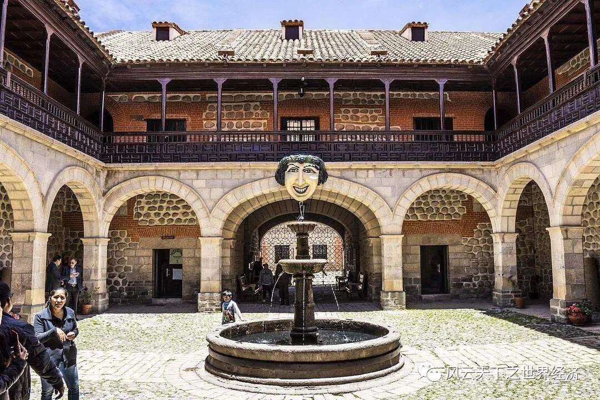
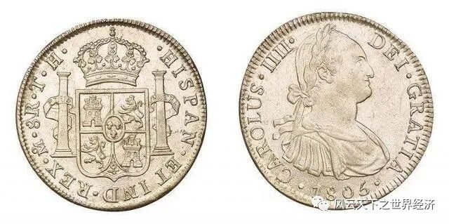
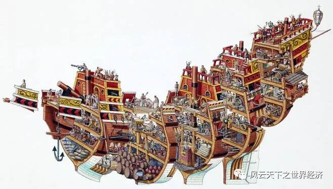
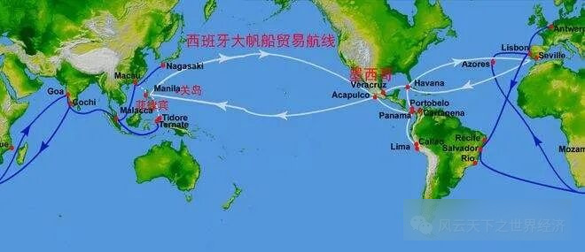
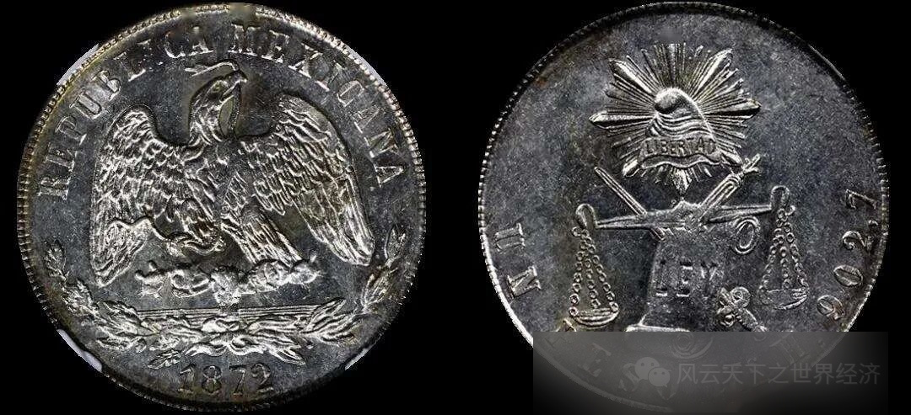
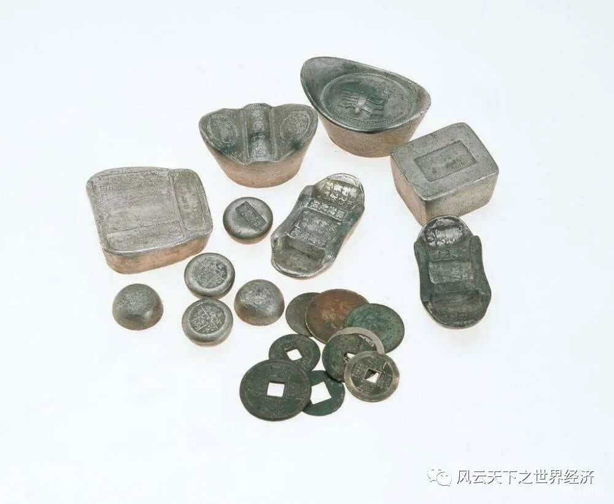
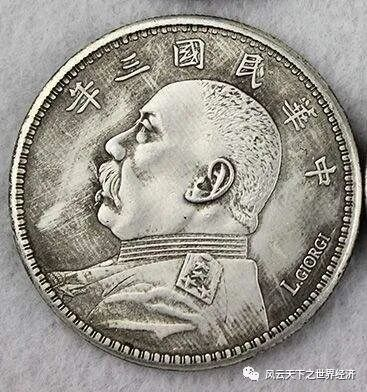

写下这些文字的是我《世界经济史》课堂上聪慧的同学们， 而这个系列早在2014年首次开课时就已预约。 八年后当她以如此风姿脱岫而出时， 我体会到了信念被兑付后的小欣喜。 深沉的经济史与年轻的思考在这里相遇， 激荡出灵动的弦歌， 以及渐次苏醒的思想。 为这个“小风云”系列， 我特意选了“总有人正年轻”这样一个名字。 其含义正如你所料， 这门课虽然以史为名， 但是我们真正寄予其中的是未来。 一万两千年世界经济史风云浩荡， 恰似过去留给我们的一个巨大谜面。 关于人类财富增长秘密的蛛丝马迹隐没其中， 等待年轻的他们去破解。 ——鲁晓东
楔子
我的一生坎坷。有很多人爱过我，也有不胜其数的人恨过我。后来，我与些别的与我有差的一同被陈列在玻璃橱内，时常有人经过，隔着玻璃盯住我仔细地瞧，更多人只是打量一眼就匆匆走过。
现在绝大多数的人都忘了我。而我有些故事想讲给人听，故事里其中一些是听来的，一些是我的亲身经历。
地狱入口：波托西银都
我与世界的初次见面伴随着一声叹息，极尽疲倦而虚弱，来自一具赤裸着上身的黝黑躯体，这是我见到的第一个人。
他将我放上一辆铁皮车，我环顾四周，这是一个黑暗逼仄的洞穴，氛围十分压抑，一辆辆小小的铁皮车里坐满了与我相仿的“新生儿”，而铁皮车的周围则有着许多与那具黝黑躯体类似的人，他们无一例外的动作僵硬、神情呆滞，却又都在疲乏地喘息。
其实那喘息更像是绝望而空洞的哀叹，我听不出其中的含义，却觉得声声叩击着心扉。
我身下的铁皮车仿佛看穿了我的慌乱心事，它悄声开口，在那幽暗的洞穴里跟我讲述着这个地方的故事——这里是一座名为赛罗里科山的山脉内的一处矿洞，赛罗里科山内尽是同我一般的埋藏在地下成千上万年的矿藏。
我是银，我的降生地名为波托西市，坐落在南美洲的玻利维亚高原上。而此时是1590年，距波托西市的建立已经过了45年。但我却不属于我降临的这片土地，不属于波托西。我属于西班牙，一个被称为日不落帝国的遥远国家。
波托西银都，曾是世界上最大的白银产地
那些用双手将我放上铁皮车的，是印第安人，他们生长于玻利维亚，却是西班牙的劳工。这些如同奴隶一般的劳工并不拥有我，只是被迫将我从矿洞中开采以带入世间，为了日不落的西班牙。这些劳工看起来仿佛行尸走肉是因为，他们身上背负着艰巨的定额开采任务，过度的矿洞工作拖垮了他们的身体与意志。铁皮车告诉我，对于这些人来说，活下去就好了，因为这里死人是常态。
“喏，你看那边那个倒下的人，他再也不会站起来了。”
有人说，这个看似灿烂的波托西银都，实际上是地狱的入口，与那些劳工长相伴的，没有正义，没有权利，唯有死神。
波托西在近十几年间极尽繁华，而且据我所知，这座城市还将继续繁华三四十余年，出产了流通于世界的一半的白银，后因银矿枯竭而逐渐走向衰落。
但不论之后如何，1590年的波托西市是当时南美最大的矿山所在地，有5000多处矿山，因矿而兴，这里是西半球最大的城市，行走着将近16万的人口，和数不尽的死去的矿场劳工的鬼魂。
铁皮车跟我说，波托西有一处西班牙的皇家矿山，开采的银矿专供西班牙王室使用，但我不是。我是波托西不起眼的普通矿山中出产的一块普通的银矿，没沾上丝毫皇室血统，我的命运是被运往当地的皇家造币厂，被加工制作成一枚枚西班牙官方银币，用以交换西班牙需要的其他物品。
我有很大的可能不会到达那个遥远的日不落帝国，而是直接在玻利维亚，这块西班牙的殖民地上，被决定好用处后，直接送到达成贸易协定的国家。

波托西皇家铸币厂
所幸我并不想去西班牙，矿洞里劳工的姿态令我心有余悸，我惧怕这个强盛的帝国，在我看来他给予了很多人痛苦和不幸。
我没有在波托西呆太久，很快我就与其他银币一同被装在大大的箱子内搬到船上。我乘坐的船友善地对我说，此趟我将漂洋过海最终抵达中国，据说这是一个东方的神秘国家，有着世界上最精致的瓷器和最华美的丝绸。我万分好奇。

西班牙银元
从那以后我很久没有再听过有关波托西和劳工们的事情，搬运箱子的人是我在这漫长岁月里见到的最后一位印第安劳工，他比矿洞里的劳工健康，却别无一二的神色空洞。离别波托西之后我见了很多人，其中大部分都用一种发亮的眼神望着我，他们应该是喜爱我；也有一些人对我报以嗤之以鼻的眼神和不屑的态度；我却再也没有见过如同波托西土著劳工一般见我的眼神，他们的眼里没有我，也没有别的其他东西。
直至三个百年过后我才又巧合地听一樽锡杯再次提到波托西，听说那里在1820年便彻底衰落，曾经的繁华城市只剩寥寥八千余人，但所幸后来又发现了锡矿，波托西才又有了生机。我想了想那些劳工的样子，不清楚波托西市的复活是幸，还是不幸。
大帆船贸易：中国与美洲的海上贸易航路
我在海上颠簸了3月有余，期间实在无趣，我便问船中国是什么样的，是不是与波托西一样也属于日不落的西班牙的版图，有着很多苦命的印第安劳工。船被我的无知逗得哈哈大笑，让颠簸更加剧烈了。

西班牙大帆船船身结构示意图
船说，它这趟会送我与其他银币到达马尼拉，一座位于巨大海岛东部的城市，那倒是由西班牙统治的。船的此趟终点便是马尼拉，不能再往前行送我们抵达中国，它稍作休整就要满载那中国来的瓷器和丝绸返回南美的墨西哥，我们则是换由中国人的船送往中国。
船说，它叫马尼拉大商帆，也有南美洲人叫它“中国之船”，因为它的前往总是携带大量的中国商品。
美洲与中国的贸易是在那座还未属于菲律宾的东南亚城市马尼拉进行，1565年起便开始了，而马尼拉大商帆进入历史舞台则是1574年的事儿。16年前有两艘马尼拉大商帆满载白银从墨西哥西海岸的阿卡普尔科启航，横渡太平洋抵达菲律宾群岛上的马尼拉市，用西班牙银币换了大量中国商品之后再返航。从此之后，马尼拉大商帆贸易正式投入运营，时称“大帆船贸易”。
我问船这样的贸易为什么不能直接在中国进行，船说中国正值万历十八年，王叫做万历皇帝，不允许任何外国商人入境，所以贸易只能在西班牙管辖的菲律宾进行。
船还说，不是所有的贸易都是这样直接用银子换商品，更多的是我用银子买你的商品，你用银子买我的商品，双方带着银子和商品来，互相交换一下带着对方的银子和商品走。而中国与美洲的贸易成为了单向的美洲购买，船向我复述了一段1573年菲律宾省督拉米沙礼斯向西班牙王报告所说的话以作为理由。
船说，“西班牙也好，墨西哥也好，所能输出到中国去的货物，没有一样不是中国所已经具备的。所以，对华贸易必须向中国输送白银。”
后来我知道这样的贸易形式是有代价的，大帆船贸易的繁荣使得中国的纺织品大量流入墨西哥，西班牙纺织品在南美殖民地的销量急剧下滑，日不落的西班牙本土原本发达的纺织业急剧衰落也罢，大量南美银币被走私到马尼拉，使得南美经济萧条、马尼拉的财政逐渐枯竭，西班牙不得不提高对中国商品的进口税以稳定财政，这一切都让西班牙对居住在马尼拉市的中国人起了杀机。终于，先后在1603年和1639年，马尼拉华人遭受到了惨绝人寰的大屠杀，数万华人遭到杀害或被投放到监狱。
受到西班牙屠杀马尼拉华人的影响，到达马尼拉的中国商船在1604年后便有所减少，但大帆船贸易却因为巨额利润一直延续到了1815年，由西班牙国王下诏而废除。
我在马尼拉没有逗留太久，美洲对中国商品的需求量是巨大的，中国商品在马尼拉市供不应求，很快我就被装上了中国人的船舶。
中国人不似我之前所见的任何人，他们不像印第安劳工，也不像西班牙人，肤色介于两者之间，大部分身材瘦弱，完全称不上魁梧，却也因此而显得文质彬彬、容易相处的样子。
我在中国船舶上遇见了一锭碎银，卡在船板夹缝之间，已经暗淡得看不出白银本身的光泽，说是被人不慎掉落夹在此处，已经有好些日子了。
碎银来自中国广州，它告诉我说这艘船已经载过很多同我一样的西班牙银币从马尼拉行驶到广州。碎银说，中国人数众多，有着悠久历史，是东方最富裕的国家。那些欧美人爱不释手的瓷器和绫罗绸缎，在中国看来都是正常玩意儿，这样的贸易中国商人的获利在十倍左右，所以才有很多中国人趋之若鹜。甚至在1580年，澳门的葡萄牙人也加入大帆船贸易，想要分一杯羹。
碎银跟我讲，每年从马尼拉经船运输到中国的白银都在100万比索到300万比索之间，这使得银子在中国成为了最为流通货币。并且与此同时，中国广州也形成了一年一度，为时两三个月甚至四个月的商品交易会，并在万历八年（1580年）改成了一年两次，就为了满足马尼拉大帆船贸易对中国商品的需求。
我暗暗吃惊，向碎银问道中国是否算是东方的西班牙，一样称得上日不落帝国？

西班牙大帆船贸易路线
碎银轻笑，抖落了身上的一抹浮尘，说除了我走过的这条中美贸易航线，中国还有途经“里斯本——好望角——果阿——马六甲——澳门”与欧洲的贸易航线，和近邻日本经澳门——长崎转口的贸易航线。碎银说它没去过西班牙，但全世界的白银都流向中国，中国的商品流往世界，便觉得中国便是世界上最强盛富裕的国家了，碎银还说，所有的中国人都是这样认为的。
时至今日，我每每想到当时碎银那番话语，再联想到后来我是如何离开中国，搬运我的中国人脸上又是如何黯淡的神情，便沉沉叹息。
巨人的陨落：风雨飘摇的近代中国
我在中国被叫做“洋钱”，因为我的身体一面印着西班牙国王的头像，本不属于中国。我在中国流转了很久，兜兜转转经了无数人的手，有人直接拿我去换些需要的东西，有人不识我，便带我去了货币兑换行，将我换成了中国本洋，买些日用家置。
我在中国度过了万历后三十年，历经了短命的光宗皇帝，又过了天启八年和崇祯十七年，见证了清军入关，昌盛一时的明朝覆灭和清朝的成立，之后又是一个接一个的皇帝，在或长或短的岁月里，统治着这个幅员辽阔的国家。
我看到中国的商品也持续地输出，来自世界各地的白银便源源不断地汇入中国，我领略到即使朝代变更、政治动荡，拥有的白银越多，后盾也越坚强。
虽说我在市面上流转了很长日子，但在不同时期，洋钱的价值却不尽相同。整体来说，由明至清，由万历年间到宣统年前，洋钱的价值先被高估，后又逐渐降低，直到1824年时同样来自南美洲的墨西哥鹰洋大量涌入中国，那之后中国境内所有外币的价值被统一定在了七钱二分。

墨西哥鹰洋
不过洋钱大部分时候都是被称重且按成色计算价值的，在清末外银统一定价时像我这样的西班牙银元已有三百余年的历史，早已锈迹斑斑，形如破铜烂铁。我认识一些同我差不多时间来到中国的西班牙银币，其中有些幸运，被人拿去收藏了起来；有些不知怎的一直在社会底层交易，已经看不出丝毫银币的精致样子；也有的被普通商户用于抵充税赋，缴到了政府官员那里，其中一些被陈放在仓库多年，一些被拖去官府造币厂熔了重铸，摇身一变就成了本洋。
我没等到宣统年的统一外银价格，便在更早的时间成了这最后一类，和其他一些洋钱一起重新进了熔炉，被制成了一锭印着清朝官印的银子。

清朝官银
我成为一锭银子之后的很长一段时间是沉闷的，因为我并未被发放进市面流通，而是又被锁在了清朝国库，成了清朝国库丰盈的一种标志。那段日子我只能听其他出产于中国的银两讲一讲白银在中国是怎么样一步步成为流通货币的，这段历史太长了，在这里只好按下不表。
直到清道光二十二年，也就是1842年，那次突然开了国库，很多人进来七手八脚地抬走很多箱银币，国库里的白银都隐隐吃惊，听说是中国打败仗了，输给了英国，要给英国巨额赔款。
时光流转，此时的日不落帝国早已不是那西班牙，而是英国了。
据说赔给英国的白银总共有2100万，其中1200万都是赔了英国军费，剩下些都补偿给了英国商人，我便进了一个旅华的英国商人的口袋，这让我有机会在中国停留更长的日子。
而在我的认知里，那也是我第一次受到如此强烈的冲击。此时很多中国人早已不像我早些年见到的谦谦君子，而是佝偻着腰、脸色或蜡黄或惨白，神情恍惚，要么手里拿着一杆烟枪，要么就在腰间别着，总是露出神经质的样子。
我曾与一杆烟枪聊过，它说它专用来抽一种从英国来的叫鸦片的东西，它说它不知道那是好东西还是坏东西，因为抽了它的人当时总是很快乐，但身体和精神状态却以肉眼可见的速度衰败。
烟枪还说，中国此次战败的由头也是这鸦片，这鸦片在中国是被官方禁止的，却背地里流转了很多年，毁了整个中国的精气神，曾经用瓷器和丝绸换来的白银被英国用鸦片一点点换走。道光十八年中国皇帝派了个叫林则徐的人赴广东禁查鸦片，这人销毁了大量鸦片，引得英国人以此为借口，派出了远征军入侵中国。
烟枪叹了口气，说欧美小国不复从前，经历了什么工业革命堪称拥有了世界上最先进的军事技术，但中国哪儿还是元朝时能将版图拓展到极遥远的陌生领域的中国，火枪火炮对冷兵器，且中国军队又因吸食鸦片被抽走了战斗力，中国根本就不是英国的对手，被迫签了《南京条约》，割地赔款。
中国已不是当时的中国，这我是看出来的。我心里有些堵，这感觉很难形容。我本不是中国的银元，却在中国呆的最久，还在因缘巧合下成为了中国官银，我抵达时的中国称得上是世界东方的巨人，如今却黯然陨落，可叹，可惜。
中国人曾经喜欢过我，因为他们发现使用白银有利可图，于是让白银成了法定的流通货币，这还刺激了中国机制银元的诞生；中国人也曾讨厌过我，因为他们觉得如我这般的外洋扰乱了他们的货币秩序，中国自制的银元始终不能将外洋驱逐出市场，这便丧失了货币主权。
但喜欢也好，讨厌也罢，都是在中国境内有着大量白银的时候谈论的。1840年之后的中国，好像已经没有什么谈论外洋好坏的必要。因为那些积累了数百年的外国白银，以及中国自己的白银，都先是一点点，而后又迅速大量地，被曾向中国输出白银的地方吞噬了回去。
鸦片战争和《南京条约》，只是飘摇风雨下中国动荡不安的伊始。
尾声
我诞生于1590年，第二年便到了中国，至此再未离开。
到1842年我又回到欧洲人手里，就截止今日来说，我的日子在那时过了大半。可以说波托西、马尼拉和广州，串起了我前两百多年的记忆。
之后的事情我在此不想多说。因为自那之后中国过了很艰难的百年，我的朋友还曾一度被又丢进熔炉，制成了印有袁世凯头像的银元。这人的历史评价不太好，我也不想多嘴，但他确实为统一中国白银币制做出了一点儿贡献，这是事实。再后来，1935年当时中国的国民政府废了银本位，白银再也不是以货币角色流通于市面，而是纯粹的工艺品了。

袁世凯当权时铸造的“袁大头”银币
对于银钱来说，讲到这里便是终结了。
而我则是在英国商人手中兜兜转转，交换多次后又回到了中国人那里，并阴差阳错被保留了下来，放到至今，成了个古物。我最后一任主人将我无偿送给了当地的博物馆，我从那之后便留在了玻璃橱窗内。
博物馆人多，感觉好生热闹，但一道玻璃将我与外界隔开，我自此只得享尽世间所有安宁。
认真瞧我的人不多，因为我的履历上写着只有二百年出头的历史，和博物馆内一些其他的老古董比，还是年轻了些。然而我多想跟人讲一讲，其实我诞生于1590年，岁数是介绍上的两倍，但是没人知晓。
现在绝大多数的人都忘了我，但依旧希望我絮絮叨叨说的这么多，你会听。
参考文献: [1]徐瑾.《白银帝国：一部新的中国货币史》.中信出版集团，2017. [2]贡德弗兰克. 《白银资本》.刘北成 译，中央编译出版社,2008. [3]邹亘. 大帆船贸易的两端[D].清华大学,2005. [4]陈昆. 明朝中后期海外白银输入的三条主要渠道[A]. .中国钱币论文集（第六辑）[C],2016:9. [5]曹洁. 论西属美洲殖民地的白银生产[D].河北大学,2010. [6]邹亘. 大帆船贸易的两端[D].清华大学,2005. [7]全汉升. 16—18世纪中国、菲律宾和美洲之间的贸易[A]. .明史研究论丛（第五辑）[C],1991:7 （全文图片源于网络）